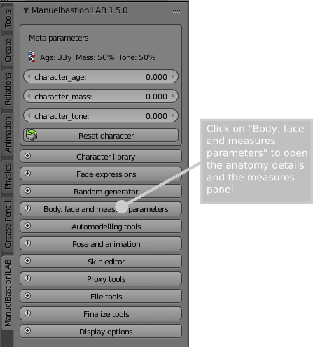

The measure system
It's possible to define the shape of characters using a set of body measures. This new feature is available only for human characters (i.e. it's not available for anime). The measures currently supported are listed here.

The measures editor is enabled selecting the "Body measures" option.

When the measures editor is enabled, the "body parameters" panel contains two main sections: the column of anatomical parameters and the column of measures. The first column is dedicated to anatomical details: see this page for more information. The second column contains the main anthropometric measures used in design, anthropology and tailoring. There are three methods to set the measures of body: direct, indirect and loading a measure file.

Direct method
The direct method lies in setting the values (in cm or inches) directly in the measure column. Pressing the "Automeasure" button the system will analyse the proportions and will return a coherent human that fits as close as possible all the given values. Comparing the measures with a database, the system can recognize, for example, if a big upperarm circumference is part of a bodybuilder or an overweight character and create a consistent model.
Indirect method
The indirect method lies in modifying the values of anatomical parameters, monitoring the changes in the measure column. It can be difficult, since each parameter usually affects many measures in the same time, but it can be a good way for little adjustements or for checking the dimensions of the character.
Loading a measure file
The system can also export and import the measures using the simple json format. This format is human readable, highly portable and simple to generate, so it can be easily adopted by external software to communicate with ManuelbastioniLAB. For more info: here.
Precision
Due to this algorithm, the resulting measures can differ a bit from the user input. In particular if the given measures are unrealistic or very uncommon, the result can present noticeable differences. The precision of the method will increase release by release, proportionally to the growing of the lab database.
The height of the character can't be assigned directly, but is automatically calculated as sum of neck, torso, buttock, upperleg, lowerleg and feet height.
Video introduction
The youtube video below shows how to use the measure system in ManuelbastioniLAB 1.2.